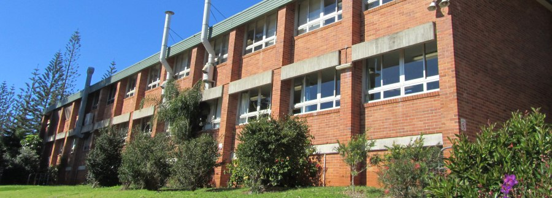
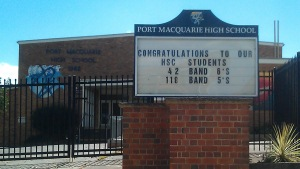
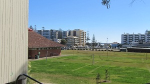
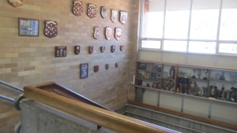
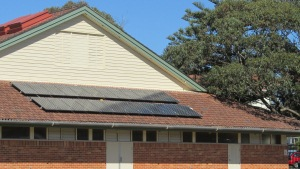

Port Macquarie High School educates around 800 students from Year 7 to Year 12. Our location between the beaches and town allows us to run a wide variety of activities as part of our curriculum.
For a map of the school,
click here.
Education

Port Macquarie High School aims to provide a strong and supportive learning environment for all students.
The school library contains both fiction and non-fiction texts, along with two classrooms of computers, a senior study area, and senior study computers. It is open at lunchtime most days for junior students, and senior students are able to use the library in any study period.
Many classrooms are fitted with interactive whiteboards to enhance learning, and the school's connected classroom allows distance education students to regularly conference with their teachers at other schools.
Students are encouraged to read with our ‘Read Every Day’ program. Each morning during roll call students take out a book or magazine and read it for twenty minutes before their first class.
For details on the courses available at Port High
see here.
Sport

We have a wide range of sporting activities available at Port High. Every Wednesday during periods 5 and 6 our juniors participate in a sport of their choosing. This is either a paid sport outside of school or a free sport within the school grounds. Our school also enters a number of competitive sports, having representative teams in sports such as soccer and basketball.
Extracurricular Activities

Our school encourages participation in a range of extracurricular activities, including drama, debating, and public speaking. There is also a school concert band. We have previously represented in the Schools Spectacular, and Rock Eisteddfod. Students frequently enter competitions (academic, performing arts), for example public speaking and Tournament of the Minds.
Citizenship and Fundraising

The school has a proud history of citizenship achievements and participations, such as entering and winning the Vampire Shield and participating in Shave for a Cure every year. The school also enjoys an annual themed walkathon along Lighthouse Beac, in which all students and staff are encouraged to dress up. There are many dress-up day fundraisers - like our Crazy Day, which is a school favourite. The environment team works hard at keeping our school eco-friendly (cleaning up the school, organising recycling bins, planting trees etc.) and our Student Representative Council (SRC) has elected members from each year group.